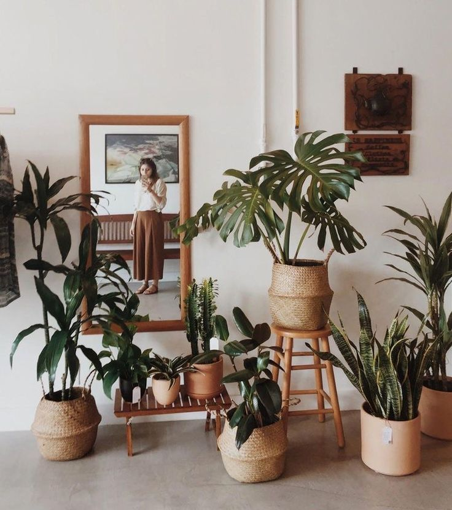
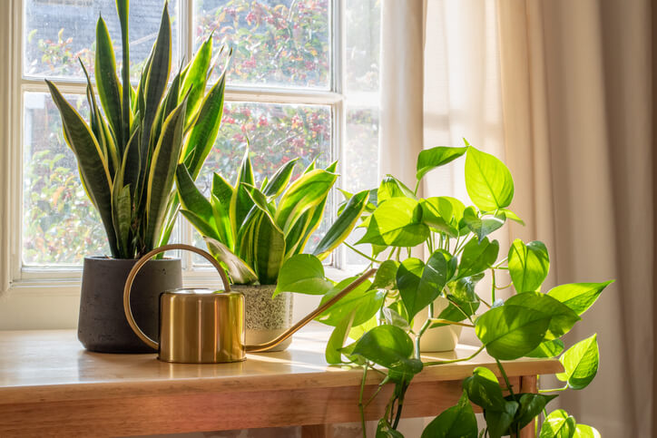
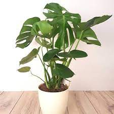
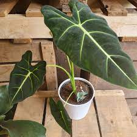
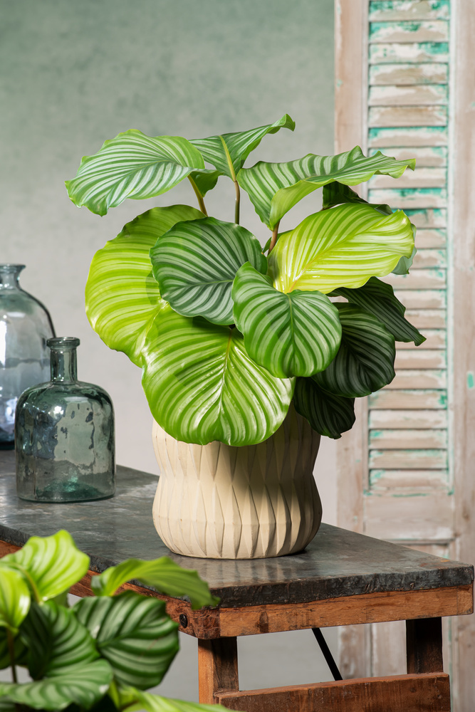
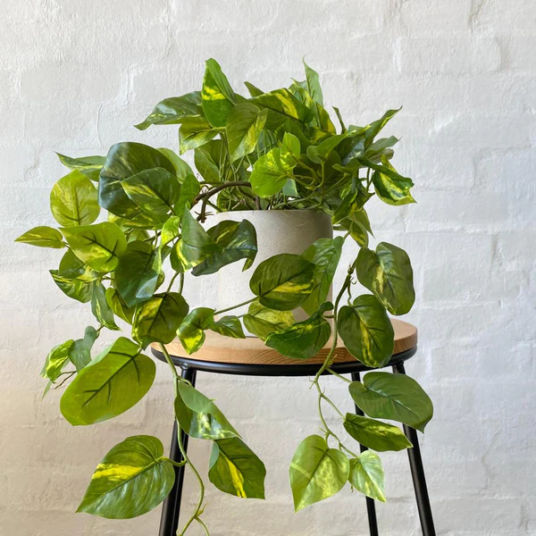

bibiplants
There’s nothing more peacfull than a little walk outside in the nature right? All the different types of plants and trees you see and how everything grows so well in harmony. But what about having plants inside? What about a place where nature meets home? Why not creating a place where harmony also happen indoors? Like an indoor plant in your livingroom or bedroom? It immediately brings the outside in, making the room feel fresh, peacfull and more alive.


A good soil mix can be made by combining equal parts of peat moss, perlite and potting soil. This mix will provide good drainage and aeration while retaining some moisture to keep the plant's roots hydrated.
Only water when the first two inches become dry. Keep the soil moist but not waterlogged as it can cause root rot.
This plant is native to the tropical rainforests and prefers to grow in areas with high humidity levels between 60% to 80%..
It requires bright, indirect light. Direct sunlight can scorch the leaves. The leaves turn yellow if it's not getting enough lightand to much light may cause brown spots
Fertilize every two to four weeks during the growing season (spring and summer).
Avoid fertilizing the plant during the dormant season (winter).
For most Dracaena varieties: potting soil, perlite, and coarse sand. This mix will provide good drainage and aeration while retaining some moisture to keep the plant's roots hydrated.
Dracaena plants prefer slightly moist soil, but they can tolerate brief periods of drought.. Water your Dracaena when the top inch of soil feels dry.
Water more in the summer and less in the winter
Dracaena prefer moderate to high humidity.level between 40-60%.
Dracaena generally prefer bright, indirect light. The light your Dracaena needs may vary depending on the specific variety and its growing conditions
Sample text. Click to select the text box. Click again or double click to start editing the text.
Pothos plants are known for being adaptable and tolerant of a wide range of soil conditions. A basic soil mix recipe that should work: potting soil, perlite and leca.
This will improve a good drainage
Pothos plants prefer to be kept evenly moist, but they can also tolerate periods of dryness. The frequency of watering your Pothos plant will depend on factors such as humidity, temperature, and light levels. In general, you should water your Pothos plant about once a week.
Pothos plants thrive in a humid environment, but they can tolerate a wide range of humidity levels. Pothos plants prefer a relative humidity level of 50% to 70%.
Pothos plants are adaptable and can tolerate a range of light conditions, from low to bright indirect light. However the less light it gets the smaller the leaves thus the longer it will take to grow.
Bright indirect light will help the plant grow more quickly and produce larger leaves.
Pothos plants do well with a balanced, water-soluble fertilizer.The best time to fertilize is during spring every two to three weeks.
The ingredients for a well draining soil mix are 2 parts peat moss, 1 part perlite, 1 part vermiculite, 1 part coarse sand or orchid bark.
The frequency of watering may vary between 7 to 10 days, or as long as 2-3 weeks between watering. Check If the top inch of soil is dry before watering.
Monstera plants can tolerate a range of humidity levels, but they will grow best in a consistently humid environment. The humidity level for monsteras is between 60-80%.
Monstera plants prefer bright, indirect light but can also tolerate lower light conditions. Avoid direct light as it can cause yellow leaves and brown spots.
Fertilizing your Monstera can help promote healthy growth and foliage.
Only fertilize during spting and summer every two to three weeks.
Sansevieria plants prefer well-draining soil that is rich in organic matter. A suitable soil mix for Sansevieria consist of
1 part peat moss or coconut coir
1 part perlite or coarse sand
1 part compost or aged bark
Sansevieria plants are succulent and can tolerate drought, so it's important not to overwater them. Water from the bottom: To avoid wetting the foliage and causing leaf rot.
they will thrive in moderate to high humidity.
like all other plants sanseveria also thrives best in bright indirect light.
Avoid direct light to prevent yellow leaves and burning spots.
Sansevieria plants do not require frequent fertilization, but feeding them occasionally can help them grow healthier and more vibrant. It's recommended to fertilize Sansevieria plants once a month during the growing season (spring and summer) and stop fertilizing during the dormant period (fall and winter).
Like most other plants are these ingredients for a well draining soil mix the best
2 parts peat moss,
1 part perlite,
1 part vermiculite,
1 part coarse sand or orchid bark.
Calathea orbifolia plants prefer consistently moist soil, but they are sensitive to overwatering. Feel if the touch nch is dry and try to water every 7 to 10 days.
Calathea orbifolia plants are native to tropical regions and therefore require high humidity to thrive. They prefer high humidity levels of around 60-70%.
Sample text. Click to select the text box. Click again or double click to start editing the text.
Apply the fertilizer every two to four weeks during the growing season. Reduce or stop fertilization during the fall and winter when the plant's growth slows down.
Wherever we are, plants make us happier. We have potted plants and durable pots in different sizes that you can place or hang up in your outdoor space, plus accessories to help you care for them.

Monstera Deliciosa

Alocasia Frydek

Calathea Orbifolia

Pothos
created with
Website Builder Software .